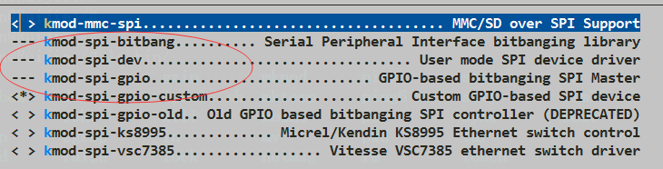

这篇文章主要记录lora原型基站开发的过程，基站支持对接市场上默认的 LoRaWAN Server，支持有线口回传，支持4G回传。
架构
- 步骤
- CPU 移植运行 OpenWRT 系统，有线口正常，这块我是基于现成的，此处省略
- 调试 SX1301 芯片驱动
- 移植 Semtech 公司开源的
packet_forwarder到 OpenWRT 平台，对接通用的 LoRaWAN Server - 调试移植4G模块驱动
- 硬件组成：CPU 使用 SOC AR95xx 系列芯片，通过 SPI 接口跟基带芯片通信，LoRa 基带射频使用 Semtech 公司的多路芯片 SX1301 + SX1255，4G 模组使用龙尚 U8300
- 软件：平台 OpenWRT ，版本 Attitude Adjustment 12.09，内核 3.3.8
- 报文流程
- AR95xx 通过
HAL模块的 SPI 读写操作控制 SX1301 接收终端发送的报文，经过packet forwarder模块封装打包后走有线口、WIFI 或 4G 通路，通过UDP方式发送给后台 LoRaWAN Server
- AR95xx 通过
LoRa 芯片驱动调试
AR9531 可以通过 USB 或 SPI 驱动 SX1301，USB方式需要FTDI转 SPI 芯片方式网上教程较多。由于板子限制，这里采用 SPI 方式，由于板子的 SPI 控制器已经用来驱动 flash，控制 SX1301 有两种方式：
- GPIO 模拟 SPI 来控制（软 SPI ）
- 实际的硬件 SPI 通过片选控制
为提高调试效率，先修改Makefile的 cmdline 字段波特率，以串口 ttyS0 为例下面命令可以查找包含 ttyS0 对应行，使用 VIM 修改成 115200。
|
|
GPIO 模拟 SPI
参考
https://randomcoderdude.wordpress.com/2013/08/15/spi-over-gpio-in-openwrt/
GPIO 管脚使用
先确认 GPIO 管脚是否可用，是否能拉高拉低
123456789cat /sys/kernel/debug/gpio # 查看 GPIO 调试信息cd /sys/class/gpioecho 2 > export # 把 GPIO 管脚 2 导出到用户空间cd gpio2echo out > direction # 配置成输出echo 0 > value # 输入值 0cat value # 查看值是否改变echo 1 > value # 输入值 1cat value
如果CPU用到对应 GPIO 口存在 JTAG 复用的话，芯片初始化 GPIO 时把 JTAG 关掉
移植编译内核模块
OpenWRT 内核默认就已经有 GPIO 模拟 SPI 的驱动模块（
spi-gpio、spi-bitbang），另外有spi-dev设备层通用驱动，用来导出到用户空间，编译内核前把这三个模块打开。spi-dev模块问题是不大方便调试，建议下载移植spi-gpio-custom模块用于动态加载软 SPI 模块，根据对应 GPIO 管脚加载。
123456789101112131415161718参数说明* bus0 These four arguments can be arrays of* bus1 1-8 unsigned integers as follows:* bus2* bus3 <id>,<sck>,<mosi>,<miso>,<mode1>,<maxfreq1>,<cs1>,...* where:** <id> ID to used as device_id for the corresponding bus (required)* <sck> GPIO pin ID to be used for bus SCK (required)* <mosi> GPIO pin ID to be used for bus MOSI (required*)* <miso> GPIO pin ID to be used for bus MISO (required*)* <modeX> Mode configuration for slave X in the bus (required)* (see /include/linux/spi/spi.h)* <maxfreqX> Maximum clock frequency in Hz for slave X in the bus (required)* <csX> GPIO pin ID to be used for slave X CS (required**)insmod spi-gpio-custom bus0=1,14,15,16,0,1000000,4 # 加载模块ls /dev/ | grep spidev1.0 # 确认 spidev 设备是否出现，存在则加载成功
硬件SPI片选控制
待完善，主要修订代码 dev-m25p80.c，
|
|
LoRa转发模块移植
编译移植 LoRa 报文转发模块
下载编译
packet_forwarder、lora_gateway模块，lora_gateway编译时生成 .a 库文件，供packet_forwarder模块调用运行报文转发程序，根据自己系统修改下Makefile，编译完生成lora_pkt_fwd可执行文件以及其他测试程序。https://github.com/Lora-net/packet_forwarder
https://github.com/Lora-net/lora_gateway
Note：模块 v3.0.0 版本对接 LoRaWAN Server 使用了自定义的 GWMP 协议版本 2，不兼容版本 1，对接时要注意两边版本一致
- 编写
packet_forwarder起机脚本，包含了加载软 SPI 模块，复位 SX1301（手册要求），更新local_conf网关 MAC，启动 LoRa 转发模块，参考如下
|
|
|
|
- 运行测试程序
Note: 运行测试程序前需先加载
spi-gpio-custom模块，可以启动一下 /etc/init.d/packet_forwarder start 关掉，或者手动加载模块
|
|
对接 LoRaWAN Server
只是原型的话推荐接入 Loriot.io 社区进行调试期间试用， https://cn1dashboard.loriot.io/login，也可以自己到 github 上查找开源相关自己搭建一个。
有线口回传
注意与 4G 回传二选一来配置，ping 不通时，注意查看路由表默认路由是否是4G端口 route -e，DNS 要配，LoRa 报文转发模块默认会解析 server 域名。
|
|
或者通过改配置文件 /etc/config/network
|
|
重启网络生效
|
|
4G模块调试
参考
https://wiki.openwrt.org/doc/recipes/3gdonglehttp://blog.csdn.net/qianguozheng/article/details/50543704
4G网卡的拨号方式有三种: PPP (PPP over EV-DO, CDMA, UMTS or GPRS)，QMI (USB modems using QMI protocol)，NCM (USB modems using NCM rotocol)
配置编译
使用驱动程序及工具，通过 make menuconfig 里要打开如下模块。
- 工具
comgt - USB HCI
kmod-usb2 (aka EHCI)
kmod-usb-ohci
kmod-usb-uhci (for example VIA chips) - 虚拟串口通信用
kmod-usb-serial, and kmod-usb-serial-option, and kmod-usb-serial-wwan, or kmod-usb-acm - 依赖库
kmod-usb-core, already in 10.03 RC3 Image
chat, dependency of comgt
ppp, dependency of chat, already in 10.03 RC3 Image
kmod-usb-serial, dependency of kmod-usb-serial-option
option 驱动加载后，出现 5 个 ttyUSB，PPP 拨号使用 ttyUSB1，AT 命令查询 ttyUSB2，数据通路走 PPP 或 QMI 拨号，两者都要修订代码 option_ids 增加 id，芯片初始化要注册USB控制器。
|
|
|
|
PPP 拨号
速率支持不是最高，当前状态下够用，3.3.8 内核配置完就可支持，通过 UCI 命令配置
或者修改 /etc/config/network 增加 ppp0 的 wan 口
|
|
/etc/init.d/network restart 重启网络
ifconfig 查看是否出现 3G 端口
QMI拨号
跟 PPP 拨号二选一， 修改代码跳过第四接口不让其被 option 驱动检测到，加载 GobiNet 模块驱动该口，支持 4G，更高速率，使用时 PPP 拨号要关掉
|
|
Gobi 芯片是高通开发的移动宽带 modem，3.3.8 内核需自己移植 GobiNet 驱动，3.4 内核以上系统自身有带 qmi_wwan 驱动，用户空间工具 ofono, uqmi and libqmi，感兴趣的可以看下 https://sigquit.wordpress.com/2014/06/11/qmiwwan-or-gobinet/
|
|
参考
除了前面提到了，下面罗列一些关于 LoRaWAN 系统搭建可能会用到的代码链接。
基站端
Low-cost LoRa gateway with SX1272 and Raspberry
This is a fork with the needed modifications to be able to use lora_gateway with a Multitech MTAC-LORA (MultiConnect mCard) board instead of a IoT Starter Kit platform.
https://github.com/mirakonta/lora_gateway
模组
Semtech 开源的节点实现代码，MCU基于STM32L151CB，射频SX1272
https://github.com/Lora-net/LoRaMac-nodeIBM 开源的节点实现代码，BSD License，支持ClassA、B
https://www.research.ibm.com/labs/zurich/ics/lrsc/lmic.html
LoRaWAN Server
lorawan server开源实现，MIT授权，可以参考实现
go语言 the things network社区，15年10月就开始做了，比较完整
https://github.com/TheThingsNetwork/ttn
V1版本源码：https://github.com/TheThingsNetwork/ttn/tree/v1-staging
TTN官网：https://www.thethingsnetwork.org
TTN架构：https://www.thethingsnetwork.org/wiki/Backend/Overview
ttnctl CLI：https://www.thethingsnetwork.org/docs/current/cli/
后台：https://account.thethingsnetwork.orggo语言，16年2月开始做的，跟TTN很像
https://github.com/brocaar/loraserver/erlang语言，适合小型网络使用，只有1个人在开发
https://github.com/gotthardp/lorawan-server
Simulation
https://sites.google.com/a/wesdec.be/mweyn/lpwan